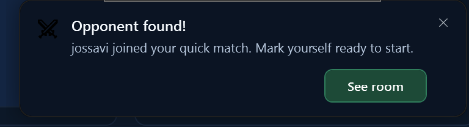

Controls/AppToast.cs y Controls/DesktopToastWindow.cs; quién lanza cada aviso, sus textos, sus tiempos y cuándo va al escritorio no cambian. Tarjeta: 420 de ancho, radio 14, relleno 16 (14 a la derecha, por la ✕). Fondo en tres capas: el cristal de los flotantes según la transparencia (Sólida rgba(12,22,38,.95) + 18 · Media .74 + 28 · Máxima .6 + 32; en el escritorio, #12213a sólido), un degradado vertical de blanco 5 % → 0 % en el 60 % superior, y un resplandor del tono desde la esquina superior izquierda (elipse de 320 × 170, 22 % → 0 % al 72 %). Borde de 1 px de blanco al 13 %, filo de luz de 1 px de blanco al 8 % arriba y sombra 0 14 36 negra al 50 %. Aviso importante (los que hoy ya van al escritorio porque te esperan: rival encontrado y rival de torneo): el borde pasa al color del tono al 55 % y se añade un halo del tono (difuminado 34, recogido 6, al 50 %).
Icono: recuadro de 44 con radio 11, siempre dibujado, nunca una letra. Tres clases: pictograma (trazo de 1,7 con extremos redondos en el color de texto del tono, sobre el tono al 16 % con borde al 45 %) para sucesos y estados; icono del mod con una insignia de 20 del tono abajo a la derecha, cuando el aviso es de una sala o de un mod concretos; y escudo del equipo en las invitaciones. Los trazos van como Geometry en recursos; los datos de cada uno están en el PIC del script de esta página, en una caja de 20 × 20. La ✕ también es un trazo (12 × 12 en un botón de 24 con radio 6). Tonos (los fijos de la base): verde #4fd68a / texto #7fe0a8 · azul #55ACEE / #A9D6F7 · ámbar #F4900C / #F5BD76 · neutro #8C9CB1 / #c3d2e5.
Texto: título 14,5/600 #f4f8fc en una línea con puntos suspensivos (interlineado 1,4); línea de contexto opcional 12 #a8bcd2 en una línea (solo las grabaciones la usan); cuerpo 13/1,45 #c3d2e5, dos líneas como mucho. Botones: abajo a la derecha, 32 de alto, mínimo 96, radio 7, 12,5/600, separados 8, el principal en el extremo. Uno solo de color: azul #2f7fe0 cuando el aviso te pide actuar (Ver sala, Aceptar, Abrir el asistente, Mostrar en la carpeta), verde MpRoomJoin solo para «Unirse». Todo lo demás (Ignorar, Ahora no, Rechazar, Ver, Jugar, Reintentar, Ver equipo), sólido #1a2c48 con borde rgba(130,175,255,.22). Barra de tiempo (nuevo): 3 px pegada al borde inferior, del color del tono, que se vacía de derecha a izquierda en lo que dura el aviso y se detiene con el ratón encima; los avisos que no se cierran solos no la llevan. Con efectos reducidos no se anima. Si no se quiere, se quita sin tocar nada más. Escritorio: la misma tarjeta sin difuminado, con una línea arriba que dice de quién es (icono de 14 y «AoE3 Mod Launcher» en 11,5 #a8bcd2).
Sustituye a los dibujos de avisos de 63c, 70b, 83l, 85j, 87m y 96e. Los menús, popovers y diálogos pequeños (103) no son avisos flotantes y no cambian aquí.